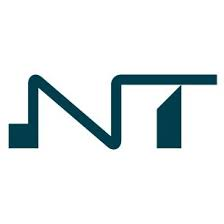

|  |
WELCOME TO NOVOTECH TRAVEL AND TOUR AGENCYWe aid in a comfort and successful tour around the world!! |
| HOME PAGE | ABOUT US | PASSPORT APPLICATION | VISA APPLICATION | CONTACT US |

PASSPORT APPLICATION
PLEASE READ THIS ENTITTLEMENT TO A GHANAIAN PASSPORT CAREFULLY
* Applicants for Ghanaian passports must be Citizens of Ghana by Birth, naturalisation, Registration, Adoption or by any Enactment. Documentary evidence must be provided in support of any such claim.
* A Ghanaian passport is the only reliable and universally accepted travel and identification document for Ghanaians who travel abroad.
* Issued to Ghanaian citizens only, a Ghanaian passport reflects the identity of the applicant as determined by documentary evidence of citizenship and documents to support identity.
* Children under the age of 16 years must have an individual passport.
REQUIREMENT CHECKLIST
* One passport size photo
* Proof of Ghanaian citizenship (originals only)
* Documents to support Identity (originals only) such as School Certificate, Driver's Licence, Employment/Student / Other I.D. Cards.
* Previous Ghanaian passport issued to you
* Processing fee
LOST OR STOLEN
Applicants must produce a Police Report, a birth certificate, an affidavit and Proof of Identity.PROXY
Passports issued in any country and illegally posted or carried on persons other than holders to the countries of residence of the holders are not valid in those countries. They will also not be validated by our Missions/Embassies when presented since they were not issued by them. Consequently applicants must renew or obtain their passports at their nearest Ghana Missions/Embassies.CHANGE OF NAME
This must be supported by duly authenticated documents such as deed polls and marriage/divorce certificate (If Applicable).STATUTORY FEE
| PASSPORT TYPE | COST OF PASSPORT | DURATION | EXPEDITED 48 PAGES | 1050 GHANA CEDIS | 3 WORKING DAYS | EXPEDITED 32 PAGES | 950 GHANA CEDIS | 7 WORKING DAYS | ORDINALLY 48 PAGES | 850 GHANA CEDIS | 30 DAYS | ORDINALLY 32 PAGES | 750 GHANA CEDIS | 60 DAYS |
PLEASE NOTE THAT COST OF PASSPORT HAS BEEN CHANGED; IT HAS IN DETAILS IN THE DOCUMENT BELOW;
ALL PASSPORT APPLICATIONS ARE VALID FOR 10 YEARS

Click to Open document file
CLICK TO GO BACK TO HOME SCREEN
Copyright © 2021. NovoTech Travel and Tour Agency. All rights reserved Designed by NOVOTECH